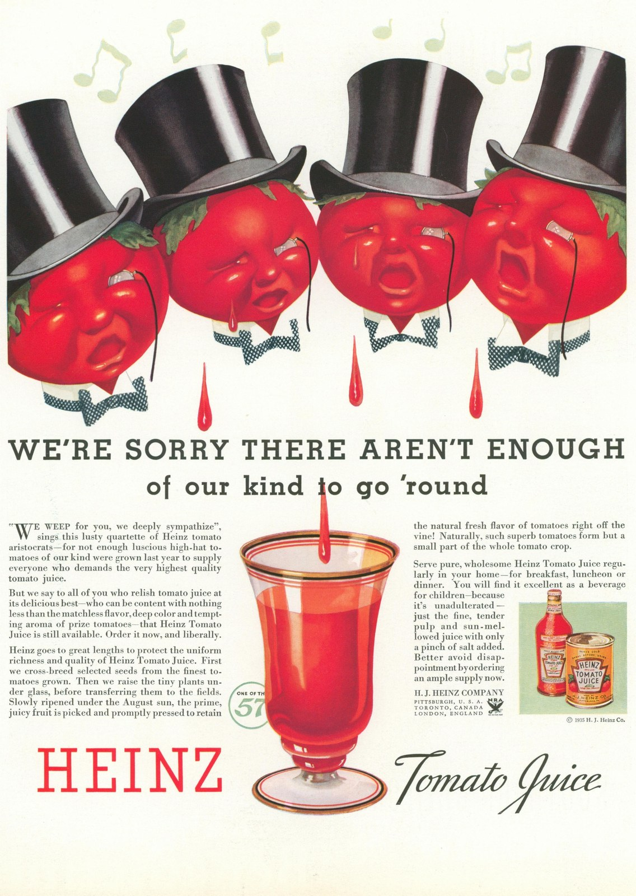

CRVI000285
Unknown - Heinz Tomato Juice — We're Sorry There Aren't Enough of our kind to go 'round
|||
Advertisement · Fortune magazine · 1935 · 1935
info
close
←
→

#poster
#1930s
#yellow
#red
#alltags
source: authenticvintageposters.com ↗
rights & use